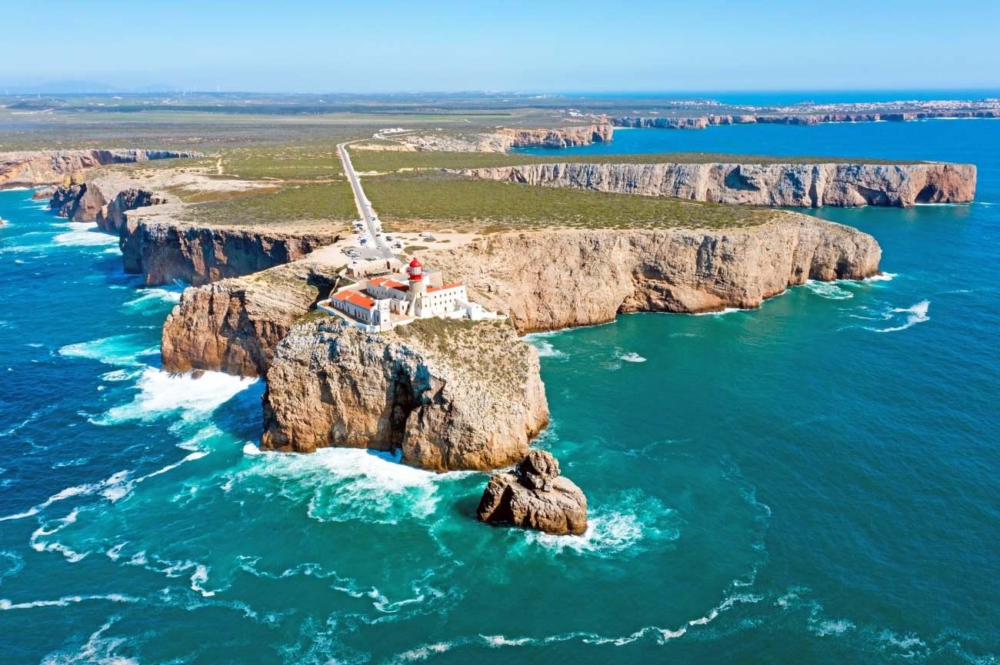

Sagres
| Sagres é uma freguesia portuguesa do concelho de Vila do Bispo, com 34,28 km² de área e 1 909 habitantes. A sua densidade populacional é de 56,6 hab./km². |
 |
| Sagres é uma freguesia portuguesa do concelho de Vila do Bispo, com 34,28 km² de área e 1 909 habitantes. A sua densidade populacional é de 56,6 hab./km². |
 |
| Vila Real de Santo António é uma cidade portuguesa localizada no distrito de Faro, na região do Algarve, com uma população de cerca de 20 000 habitantes. |  |